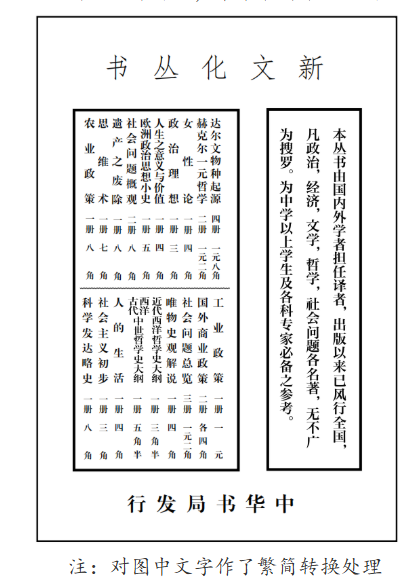

中外历史纲要上
【回归教材 · 中国近代史】精选高考真题
一、选择题
A．要求英国武力对华进行市场扩张
B．维护英国垄断资产阶级的利益
C．迫使中国增开沿海内陆贸易口岸
D．谋取对华贸易片面最惠国待遇
答案：A
材料核心信息：贸易增长但受阻→需用武力（"刺刀尖下""大炮瞄准下"）逼迫中国缔约，即主张以武力打开中国市场。B"垄断资产阶级"概念过大，材料未涉及；C"增开沿海内陆贸易口岸"是具体条约内容，材料未提及；D"片面最惠国待遇"也是具体条约权益，材料未体现。故选A。
A．男耕女织的小农经济已经解体
B．西式教育改变人们的劳动观念
C．城市化推动乡村生活方式变化
D．民众娱乐活动受农业文明影响
答案：D
"小放牛"游戏以农业生产的放牛场景为原型，儿童模仿牵牛、骑牛等农耕活动，说明民众的娱乐活动深受农业文明的影响。A"已经解体"与材料无关且说法过绝；B"西式教育"与农耕游戏无关；C"城市化"材料未涉及。故选D。
A．直接推动新式海军的建立
B．对西方的认知突破器物层面
C．致力于推行"自强"新政
D．初步认清西方殖民主义本质
答案：D
魏源提议联合美、法、俄以应对英国，说明他已认识到不同西方国家的利益诉求不同，英国是主要的殖民侵略者，初步认清了西方殖民主义的本质。A"直接推动"不准确，魏源只是建议，并未付诸实践；B"突破器物层面"通常指涉及政治制度变革，魏源仍停留在军事和外交层面；C"自强新政"是后来洋务运动的概念，时代不符。故选D。
A．太平天国与西方的宗教没有关联
B．清廷腐朽统治是农民革命动因
C．没有洪秀全就不会发生农民起义
D．内部腐败导致太平天国的失败
答案：B
材料明确否定宗教和洪秀全是革命的根本原因，强调"最大之真因为行政机关之腐败，政以贿成"，即清政府腐朽统治才是农民革命的根本动因。A"没有关联"过度绝对，材料说"非真因"而非"没有关联"；C与材料"即无洪秀全……亦必不能免于革命"矛盾；D"太平天国的失败"在材料中未涉及，材料讨论的是起义的动因。故选B。
A．深受传统义利观影响
B．孕育了民主革命思潮
C．源于创办实业的失败
D．折射时代变革的需求
答案：D
盛宣怀从最初只关注技术人才，到后来认识到还需要外交、政务、法律、管理等人才，其认识的变化反映了时代需求的变迁——从洋务运动学习西方技术，到维新变法追求制度变革，折射出中国近代化从器物到制度层面的深化。A"传统义利观"与材料无关；B"孕育民主革命思潮"过度推断；C"创办实业失败"材料未提及。故选D。
A．列强在华利益彼此冲突对立
B．清廷力拒外资实现铁路国有
C．攫取路权是列强扩大侵华的工具
D．东北地区成为列强在华争夺焦点
答案：C
19世纪末20世纪初，列强纷纷攫取中国铁路修筑权和经营权，通过控制铁路扩大经济侵略和政治影响。漫画反映了攫取路权是列强扩大侵华的重要工具。A虽有一定道理但非材料主旨；B"力拒外资"与史实不符（清政府反而出卖路权）；D"东北地区"过于具体，漫画并非仅涉及东北。故选C。
A．儒家经典是否具有现实价值
B．以西学解释中学是否可行
C．要不要进行政治制度变革
D．推行改良还是进行革命
答案：C
梁启超宣扬民权，试图以"六经"为理论依据，实质是主张政治制度变革（实行民权政治）；叶德辉反对民权，维护君主权威，实质是反对政治变革。两者争论的核心是"要不要进行政治制度变革"。A"经典现实价值"和 B"以西学解释中学"都是争论的表象而非实质；D材料未涉及"革命"主张。故选C。
A．严重动摇清政府的统治根基
B．推动湘淮系官僚集团崛起
C．深刻影响洋务运动自强政策
D．打击了帝国主义在华势力
答案：A
材料反映的是1900年东南互保事件。张之洞、刘坤一等地方督抚未经中央授权，自行与列强达成协议，维护东南地区安定。地方官员绕过中央政府独立行动，民众归功于地方官员而非中央政府，从侧面说明中央权威严重削弱，严重动摇了清政府的统治根基。B"湘淮系崛起"不是材料核心；C洋务运动此时已结束；D东南互保恰恰是避免与列强对抗。故选A。
A．国人振兴经济救国强国的愿望
B．一战期间民族经济发展较快
C．帝国主义的经济侵略日益加深
D．清政府解决财政危机的信心
答案：A
1909年正值清末新政和实业救国思潮兴起时期，《图画日报》以寓意画形式宣传振兴经济，反映了国人通过发展经济实现救国强国的愿望。B时间错误，一战1914年才开始；C帝国主义侵略是背景而非寓意画的主旨；D"清政府的信心"与民间刊物的立场不符。故选A。
A．京师同文馆在北京设立
B．维新派主张废八股改试策论
C．清末新政推行教育改革
D．北洋政府建立文官考试制度
答案：C
"学堂改章"指清末新政中的教育改革（1901年后废除科举、兴办新式学堂）。新式学堂注重科学课程，学生"喜新厌故"，忽视经学，导致大学经科难觅合格人才。A京师同文馆设立于1862年，与"学堂改章"时间不符；B维新派主张是1898年，且未大规模实施；D北洋政府时期晚于材料描述。故选C。
A．支持维新变法
B．倡导民族团结
C．警告西方列强
D．宣传民主革命
答案：D
1907年正值资产阶级民主革命运动高涨时期，同盟会成立后革命思想广泛传播，漫画意在宣传民主革命、推翻清朝统治。A维新变法在1907年已过时；B"民族团结"与漫画主旨不符；C"警告西方列强"不是此时期漫画的主要主题。故选D。
A．民主共和政体在中国初步确立
B．国家建设需要丰富的政治经验
C．临时大总统须遵守《临时约法》
D．移交政权有利于巩固革命成果
答案：D
孙中山强调革命目标（倾覆满清、创立民国）已实现，建设之事应让有经验之人来做；总统须守宪法从舆论，革命党人不必身揽政权。核心逻辑是：交出政权（给袁世凯）只要能确保共和制度（守宪法、从舆论），就有利于巩固革命成果。A是客观评价而非孙中山强调的内容；B只是表层意思；C《临时约法》材料未直接提及，"宪法"范围更广。故选D。
A．封建专制势力的复辟
B．议会政治体制的崩溃
C．社会主义革命的推进
D．思想文化革新的兴盛
答案：D
材料描述辛亥革命后代议制失信，俄国革命后新思想如潮水般涌入中国，人们开始用科学方法探讨社会问题。这集中反映了新文化运动以来思想文化革新的兴盛——从对代议制的反思，到对各种新思想的探索。A"复辟"与材料方向相反；B"崩溃"过于绝对；C"社会主义革命的推进"在此时还未成为主流。故选D。
A．北洋时期政治上分崩离析
B．国人认为救亡应以自强为本
C．北洋政府的外交彻底失败
D．国人思想受新文化运动影响
答案：D
国耻日从日本的通牒日（5月7日）变为北洋政府接受条约日（5月9日），说明国人从单纯仇恨外敌转向反思本国政府的软弱无能，体现了批判性思维的觉醒和自我反省意识，与新文化运动倡导的理性批判精神一致。A与材料无关；B"自强为本"不是转变的核心含义；C"彻底失败"过于绝对。故选D。
A．创办于上海的《青年杂志》迁往北京
B．孙中山在民国时期同他人的谈话中，频繁提及民族主义
C．各军阀若攻击他人，则常称其出卖国家利益
D．第一次世界大战期间，中国纺织、面粉等轻工业迅速发展
答案：C
各军阀攻击他人时常称对方"出卖国家利益"，说明民族主义已成为一种普遍的政治话语和道德标准，连军阀都不得不借助民族主义来获取合法性，最能证明民族主义的"盛行"。A与民族主义无直接关联；B只反映孙中山个人关注民族主义，不足以证明"盛行"；D是经济现象，与民族主义不是直接论证关系。故选C。
A．威斯特伐利亚体系形成
B．资本主义世界殖民体系建立
C．欧洲列强忙于一战无暇东顾
D．主要资本主义国家出现"滞胀"现象
答案：C
1913—1921年间中国民族面粉工业的快速发展，直接得益于第一次世界大战（1914—1918年）。战争期间欧洲列强忙于战争，暂时放松了对华经济侵略，中国民族工业获得了发展的"黄金时期"。A威斯特伐利亚体系形成于17世纪；B殖民体系建立于19世纪末；D"滞胀"出现于20世纪70年代。故选C。
A．崇尚儒学仍是时代潮流
B．新旧势力斗争激烈
C．政党政治造成政策摇摆
D．私塾退出历史舞台
答案：B
辛亥革命后虽倡导剪辫、兴新学，但该校教师仍留辫（旧势力残余），学生人数锐减、私塾生不再来（旧势力对新式教育的抵制），反映出新旧势力之间的激烈斗争。A"崇尚儒学"不是材料重点；C"政党政治"与材料无关；D"私塾退出"与"私塾生不再来学新课程"矛盾。故选B。
A．文学革命的深入
B．民主思想的活跃
C．北洋政府的腐朽
D．教育革新的推行
答案：A
1920年白话文已成为教科书语体，到1925年文学革命已深入发展，白话文在社会文化领域扎根深厚，思想文化界人士的强烈反对正是文学革命深入人心的体现。B"民主思想"不是直接原因；C"北洋政府腐朽"与失败原因无直接逻辑关系；D"教育革新"是文学革命的结果而非原因。故选A。
A．"打倒列强，除军阀"
B．"取消二十一条"
C．"停止内战，一致抗日"
D．"驱除鞑虏，恢复中华"
答案：B
材料描述的是五四运动（1919年），因巴黎和会将山东权益转让日本而引发。学生在五四运动中提出"外争主权，内除国贼""取消二十一条""誓死力争，还我青岛"等口号。A"打倒列强，除军阀"是国民革命时期口号；C"停止内战，一致抗日"是抗日战争时期口号；D"驱除鞑虏，恢复中华"是辛亥革命时期口号。故选B。
A．制定民主革命纲领
B．引导群众理论联系实际
C．推翻资产阶级专政
D．发动工人投身革命斗争
答案：B
瞿秋白强调工人阶级不能仅靠书本（理论）觉悟，必须积累"实际普遍的政治经验"（实践），即理论必须联系实际。A民主革命纲领已有（党的二大）；C"推翻资产阶级专政"不符合当时民主革命阶段的任务；D"发动工人"不如B"理论联系实际"准确，材料强调的不是发动而是方式方法。故选B。
A．使中国革命有了符合国情的目标
B．使中国革命有了坚强的领导力量
C．直接促成第一次国共合作的实现
D．根本改变了中国社会的发展方向
答案：A
党的一大照搬俄国模式，主张直接进行社会主义革命，不符合中国半殖民地半封建社会的国情；党的二大制定了反帝反封建的民主革命纲领，先进行民主革命再进行社会主义革命，使中国革命有了符合国情的目标。B"坚强领导力量"党的成立就确立了；C"直接促成"说法不准确，国共合作还有其他因素；D"根本改变"过于绝对。故选A。
A．革命的形势逐渐好转
B．党组织在基层影响扩大
C．新文化运动影响深远
D．工农革命运动蓬勃开展
答案：B
王纯一以校长身份在偏僻农村建立党支部、宣传进步刊物、发展党员，说明党组织已深入基层并在偏远地区扩大影响。A"革命形势逐渐好转"与1927年大革命失败后的低潮背景不符；C"新文化运动影响深远"只是借用《新青年》刊名，不是核心；D"工农革命运动蓬勃开展"材料只涉及党员发展，未体现工农运动。故选B。
A．反帝爱国有助于民族工业发展
B．产品命名是国货畅销的主因
C．民族经济的发展需要抵制日货
D．民族企业引入新的经营方式
答案：A
"九一八"品牌唤起国人的反帝爱国情感，国人竞相购买使企业恢复生机，说明反帝爱国热情有助于民族工业发展。B"主因"表述不准确，爱国情感是根本推动力；C"需要抵制日货"过于绝对，且材料侧重的是爱国情感促进民族工业；D"新的经营方式"材料未涉及。故选A。
A．开源节流，支持革命
B．自己动手，丰衣足食
C．减租减息，一致抗日
D．土地改革，支援前线
答案：B
两幅宣传画反映的是抗战时期陕甘宁边区大生产运动。"自己动手，丰衣足食"是毛泽东为大生产运动题写的著名口号，体现了边区军民自力更生、发展生产的革命精神。A"开源节流"不是大生产运动的口号；C"减租减息"是土地政策，与宣传画主题不同；D"土地改革"是解放战争时期的政策。故选B。
A．经济工作稳步推进
B．战略转移需要民众支持
C．苏区教育成效显著
D．集中粮食服务扩大红军
答案：C
列宁小学学生积极宣传鼓动参军、动员集中粮食，说明苏区的教育培养出了具有革命觉悟的青少年，教育成效显著。A"经济工作"与材料主旨不符；B"战略转移"（长征）材料未涉及；D只是材料部分内容，不是核心结论。故选C。
A．全民族团结抗战局面的形成
B．抗日联军后勤装备保障充足
C．苏军进入东北支援中国抗战
D．中国共产党收复失地的信念
答案：D
《救国时报》是中国共产党在海外创办的报纸，画作中的抗日联军是中国共产党领导的东北抗日武装。画中士兵英勇战斗的形象，意在表现中国共产党坚持抗战、收复失地的坚定信念。A1937年5月全面抗战尚未开始，"全民族团结抗战局面"尚未形成；B"装备保障充足"与布琼尼军帽象征性使用不符；C"苏军进入东北"与史实不符。故选D。
A．中国古代历史研究
B．中国历史文脉传承
C．中西文化融会贯通
D．人文社会科学教育
答案：B
西南联大历史系各课程组中中国史课程占比明显偏高，且规定必选中国史，体现了在抗战时期注重传承中国历史文脉的办学取向——通过历史教育维系民族认同和文化传承。A"古代历史研究"范围过窄；C"融会贯通"与材料强调中国史比重大相矛盾；D"人文社会科学"过于宽泛。故选B。
A．开启了边区大生产运动的先声
B．解决了敌占区民众的生活困难
C．破坏了日军"以战养战"的部署
D．扩大了中共在游击区的影响力
答案：C
高价收购铁轨、铁丝，引导民众破击敌方军用设施，直接破坏了日军的铁路运输和军事设施，打断了日军利用占领区资源支持战争（"以战养战"）的部署。A大生产运动1941年已开始，时间不符；B"解决了"过于绝对；D"扩大影响力"不是主要目的，材料侧重的是军事经济效果。故选C。
A．官僚资本的垄断
B．通货膨胀的恶化
C．国际援助的中止
D．外国资本的压迫
答案：B
1948年国统区爆发恶性通货膨胀，法币和金圆券急剧贬值。账面金额虽巨大，但货币购买力极低，实际是"虚盈实亏"——卖出货物收回的货款远不能补进同等数量的货物，导致货物存量越来越少。A"官僚资本垄断"虽有影响但不是"虚盈实亏"的直接原因；C"国际援助中止"与商业经营无关；D"外国资本"不是主要原因。故选B。
A．表明党的工作重心转向城市
B．奠定全国土地改革的基础
C．预示国家建设即将全面展开
D．为民主革命的胜利做准备
答案：D
1949年2月，辽沈、淮海、平津三大战役即将胜利，毛泽东指示制作长江以南及西北、西南地图，是为即将发起渡江战役和进军全国做准备，即为民主革命在全国的最终胜利做准备。A"转向城市"与制作军事地图的目的不符；B"土地改革"与地图无关；C"国家建设"不是此时军事行动的核心目标。故选D。
二、非选择题
材料一 七七事变前，中国除东北地区外交通基础十分薄弱。全国抗战爆发后，国民政府西迁重庆，采取多种措施推动西南地区交通运输业的发展。公路方面，各族群众、爱国华侨齐心协力，打通滇缅公路全线，修通中印公路，改善西南国际交通。同时，通过改善旧路和修筑新路，形成以贵阳、重庆为中心的西南公路网，并与西北公路连接起来。铁路方面，赶筑滇缅、川滇铁路。水运方面，扩展和开辟长江、嘉陵江等航线，实现水陆联运。空运方面，开辟莫斯科至重庆、重庆至香港、昆明至河内、昆明至仰光及驼峰航线等。
——摘编自章开沅、朱英主编《中国近现代史》等
材料二 在抗战大后方的新疆地区，各族儿女的抗战热情不断高涨。在八路军驻新疆办事处推动下，抗战文化宣传和"一县一机"等抗日募捐活动此起彼伏，中苏国际公路交通线和航空线、中印驿运线开通。新疆各族同胞捐献的10架"新疆号"战斗机参加武汉保卫战，至1944年8月，共捐献飞机154架。此外，新疆各族人民还架桥修路，运输盟国援华物资，并以大量的农、牧、矿产品换回抗战急需的武器、弹药和军需品。
——摘编自本书编写组《中华民族共同体概论》
（1）根据材料一，概括全国抗战时期西南交通运输业发展的特点。
【第（1）题参考答案】
①多种运输方式并举（公路、铁路、水运、空运全面发展）；
②注重国际交通线建设（滇缅公路、中印公路、驼峰航线等连接国际）；
③以贵阳、重庆为中心形成西南公路网，并与西北公路相连接；
④实现水陆联运，多种运输方式协同配合；
⑤依靠各族群众和爱国华侨的力量共同建设。
（2）根据材料并结合所学知识，简析全国抗战时期大后方交通建设的意义。
【第（2）题参考答案】
①保障了国际援华物资的运输通道，维持了中国与国际社会的联系，支持了持久抗战；
②打破了日军对中国沿海的封锁，为抗战大后方提供了战略物资保障；
③促进了西南、西北地区的经济发展和基础设施建设，为战后建设奠定了一定基础；
④加强了各民族团结抗战，增强了中华民族的凝聚力；
⑤新疆等边疆地区的交通建设和抗战参与，巩固了国家统一，增强了中华民族共同体意识；
⑥体现了全民族抗战精神，各族人民为抗战胜利作出了重要贡献。
"新文化丛书"广告一则
自1920年开始，中华书局推出"新文化丛书"，陆续出版图书40余种。下图为中华书局推介"新文化丛书"的一则广告。

注：对图中文字作了繁简转换处理
评析这则广告对研究"新文化丛书"的价值。
【参考答案】
一、史料价值
该广告是中华书局在1920年代发布的原始商业宣传品，属于一手史料，对于研究"新文化丛书"具有重要价值：
①反映丛书出版信息：广告展示了丛书的书名、作者、出版时间等基本信息，有助于考证丛书的出版规模和选材取向；
②体现出版机构的策略：广告的措辞、版式和宣传重点反映了中华书局的出版定位和市场策略，有助于理解新文化运动对出版业的影响；
③折射时代思想潮流：丛书以"新文化"命名，广告强调"新"的取向，反映了新文化运动后知识分子对新思想、新知识的渴求；
④揭示知识传播渠道：广告展示了新文化思想通过商业出版渠道向公众传播的方式，有助于研究新文化运动的传播机制。
二、局限性
①广告是商业宣传品，可能夸大丛书价值，需要与其他史料（如书籍实物、读者反馈等）交叉印证；
②广告内容侧重宣传效果，未必全面反映丛书的学术质量和实际影响；
③广告面向的是潜在购买者，不能完全代表丛书的学术意义和社会影响。
三、结论
该广告作为一手史料，对研究"新文化丛书"的出版背景、内容构成和传播方式有重要参考价值，但需注意其商业属性带来的偏颇，应结合其他史料综合分析。